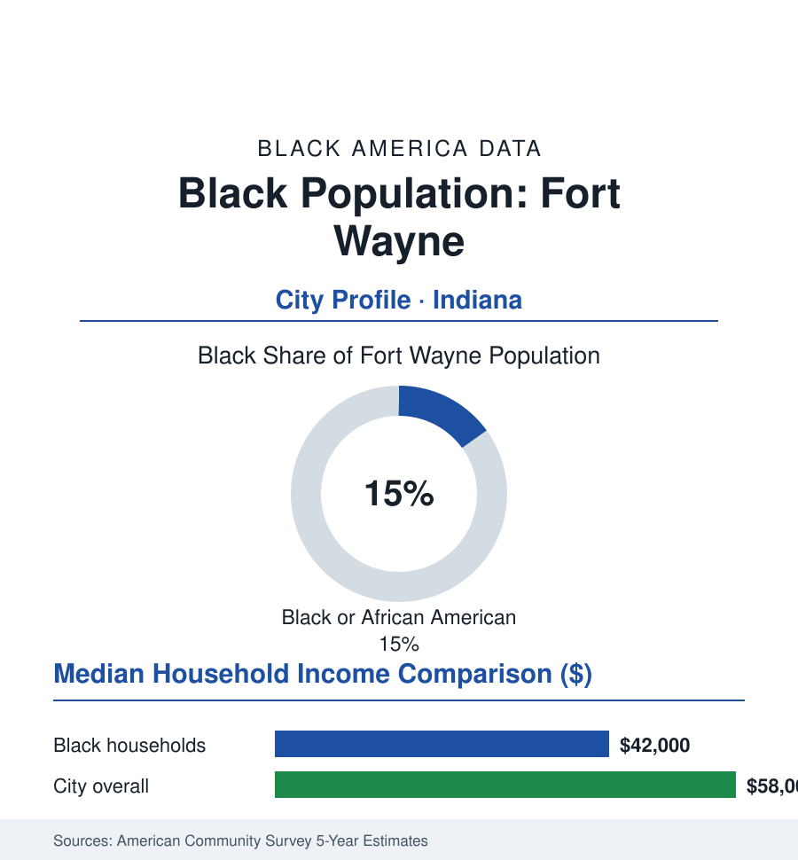

Black Cities
Black Fort Wayne: 42,000 People in the Summit City
Fort Wayne's Black community, about 42,000 strong and 15% of the city, grew with the Harvester and wire plants and holds the southeast side. The census portrait.

Fort Wayne's Black community numbers approximately 42,000 people — about 15% of the Summit City's 265,000 residents — the second-largest Black population in Indiana after Indianapolis, built by the same industrial century in miniature: the International Harvester plant (for decades the city's largest employer, its truck works drawing Southern workers north), the Magnavox and General Electric works, and the wire and machinery shops of a city that manufactured for the farm belt and the nation. Fort Wayne's Black data carry the Hoosier industrial profile: a community anchored on the southeast side, thinned by the plant closures of the 1980s, and persisting in a city that has spent the current century reinvesting its riverfront and downtown.
Industry, the Southeast Side, and the Harvester Era
The Great Migration's Fort Wayne chapter ran on factory rails: Harvester's Fort Wayne Works (the Scout truck's birthplace) and the electrical-machinery plants hired Black Southerners from the 1940s, and the community settled the southeast quadrant — the neighborhoods around Hanna Street and the corridors the city's Black church and business life organized along (the record preserved in the Allen County Public Library's collections and the African Village heritage work). The 1982 Harvester closure — thousands of jobs ending in a single announcement, among the largest plant shutdowns of its Midwest moment — is the community's economic hinge date in the oral histories: the decades after ran on the remaining employers (the GE remnant, the hospital systems, the logistics of the I-69 corridor, the defense-aerospace remnant at the airport) and on the public sector. The southeast side's subsequent data — its disinvestment indicators, its housing valuations, its retail thinness — fill the city reports; so do its institutions, the churches and the Urban League and the neighborhood associations that anchor the quadrant still.
Education, Institutions, and the Small-City Pattern
Fort Wayne Community Schools (the state's second-largest district) enrolls a student body about a quarter Black, around flagships like Snider and Northrop and the South Side High School of the community's own attendance geography. The campus tier is commuter-scale: Purdue Fort Wayne and Indiana Tech (the city's largest higher-ed footprints; both draw the region, their Black enrollments in the high single digits to low double digits), Ivy Tech's large campus (the workforce engine, its student body the city's most representative), and the religious colleges of the area. The institutional skeleton matches the small-Midwest-city file: a long-running NAACP chapter, the Urban League of Fort Wayne, Black Greek chapters, the Martin Luther King Jr. Club (the local civil-rights institution of record), and a Black church network whose East-side congregations double as the community's civic hall. The media file is thin — the historic Black press survives in the library's archive more than on the newsstand, the Frost Illustrated era preserved digitally — and the cultural calendar runs on the university and church stages and the summer festival circuit.
The Economic Ledger
The ACS ledger for Black Fort Wayne: median household income in the low forty-thousands against a city median in the high fifty-thousands; homeownership in the mid-forties percent range, with the southeast side's housing stock (modest, older, appreciating slowly in the county data) as the community's equity base; poverty rates above the citywide line in the familiar pattern. The employment base the census records: the hospital systems (Parkview and Lutheran — the region's largest employers and the workforce's health file), the remaining manufacturing (the specialty steel and auto-supplier tier), logistics, education, and retail. The revival investments of the current era — the downtown and riverfront redevelopment (Promenade Park and the Electric Works conversion of the old GE campus) — are sited away from the southeast, and the equity distribution of the growth is the city's live data argument: whether the Summit City's second century of Black life shares in the reinvestment its grandparents' labor underwrote.
Reading Fort Wayne's Numbers
Fifteen percent of Indiana's second city, built by Harvester and held through its closing: Fort Wayne is the atlas's case of the mid-size industrial Black community — too large to be a footnote, too small to be presumed — whose southeast side has now carried the community's institutions through two full economic eras. The third era, the reinvestment one, is being counted in the same ACS tables as the first two. The record will show what it decided.
More in Black Cities
Black Atlanta: Population, Distribution, and Growth of a Black Metropolis
Metro Atlanta holds more than two million Black residents — roughly one in three, second only to New York. The suburban distribution, migration history, and composition of Black Atlanta in the census data.
Black New York: The Largest Black Population in America
The New York metropolitan area holds about 3.4 million Black residents — more than any metro in the nation — and the city itself about two million. The census profile.
Black Washington: The District and the Metro
The Washington metro holds about 1.6 million Black residents, and the District itself — long a majority-Black city — now records a Black share near 41 percent. The census profile.
Source: U.S. Census Bureau, 2020 Census and American Community Survey 5-year estimates; City of Fort Wayne; Allen County Public Library and local archives.